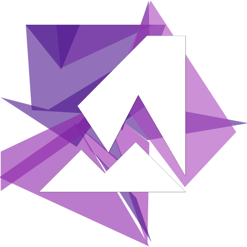

Xmutarn
Moderno, estiloso, fácil e produtivo.
ComeçarVersão: 0.29.0-beta

Moderno, estiloso, fácil e produtivo.
ComeçarVersão: 0.29.0-beta
Completamente semântico. Não sacrifique seu código para aplicar seu estilo.
Com padrões para diminuir a curva de aprendizado e a constante consulta na documentação.
Amamos a produtividade, assim como todos. "Snippets" hoje, "snippets" amanhã, "snippets" sempre.